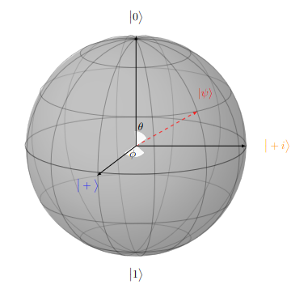

Section 1.8 Computational Bases and the Bloch Sphere
So far, the only basis we have looked at for measuring a qubit is \((\ket{0},\ket{1})\text{,}\) but this is not the only one. In quantum computation, we define three orthogonal basis states. For now, we will call these the X-measurement, Y-measurement, and Z-measurement, which will make sense shortly.
X-Measurement
\(\{\ket{+},\ket{-}\}\) are eigenstates of the Pauli X Matrix, \(\sigma_x\) (which is \(\begin{pmatrix} 0 & 1 \\ 1 & 0 \end{pmatrix}\text{,}\) as we will see in Subsection 2.2.2). These are called the Hadamard (transversal) basis states
\begin{equation*}
\Big\{\ket{+}:=\frac{1}{\sqrt{2}}\Big(\ket{0}+\ket{1}\Big), \ket{-}:=\frac{1}{\sqrt{2}}\Big(\ket{0}-\ket{1}\Big) \Big\}
\end{equation*}
Y-Measurement
\(\{\ket{+i},\ket{-i}\}\) are eigenstates of the Pauli Y Matrix, \(\sigma_y\) (which is \(\begin{pmatrix} 0 & -i \\ i & 0 \end{pmatrix}\text{,}\) as we will see in Subsection 2.2.3).These are called the Longitudinal (Left-Right) basis states
\begin{equation*}
\Big\{\ket{+i}:=\frac{1}{\sqrt{2}}\Big(\ket{0}+i\ket{1}\Big), \ket{-i}:=\frac{1}{\sqrt{2}}\Big(\ket{0}-i\ket{1}\Big) \Big\}
\end{equation*}
Z-Measurement
\(\{\ket{0},\ket{1}\}\) are eigenstates of the Pauli Z Matrix, \(\sigma_z\) (which is \(\begin{pmatrix} 1 & 0 \\ 0 & -1 \end{pmatrix}\text{,}\) as we will see in Subsection 2.2.4). These are called the Computational basis states
\begin{equation*}
\Big\{\ket{0}:=\begin{pmatrix}1\\0\end{pmatrix},\ket{1}:=\begin{pmatrix}0\\1\end{pmatrix},\Big\}
\end{equation*}
\(\ket{\psi}=\frac{1}{\sqrt{2}}\Big(\ket{0}-\ket{1}\Big)\) is measured in the basis \(\{\ket{+},\ket{-}\}.\) Calculate \(P(+)\) and \(P(-).\)
Solution.
\begin{equation*}
P(+) = (\braket{+|\psi})^2 = (\frac{1}{\sqrt{2}}(\bra{0} + \bra{1}) \cdot \frac{1}{\sqrt{2}}(\ket{0}-\ket{1}))^2 = (\frac{1}{2}(\braket{0|0} - \braket{0|1} + \braket{1|0} - \braket{1|1}))^2 = (\frac{1}{2}(1 - 0 + 0 - 1))^2 = 0
\end{equation*}
\begin{equation*}
P(-) = (\braket{-|\psi})^2 = (\frac{1}{\sqrt{2}}(\bra{0} - \bra{1}) \cdot \frac{1}{\sqrt{2}}(\ket{0}-\ket{1}))^2 = (\frac{1}{2}(\braket{0|0} - \braket{0|1} - \braket{1|0} + \braket{1|1}))^2 = (\frac{1}{2}(1 - 0 - 0 + 1))^2 = 1
\end{equation*}
Checkpoint 1.8.2. A state in the Computational basis.
\(\ket{\psi}=\frac{1}{\sqrt{3}}\Big(\ket{0} +\sqrt{2}\ket{1}\Big)\) is measured in the basis \(\{\ket{0},\ket{1}\}.\) Calculate \(P(0)\) and \(P(1)\text{.}\)
Solution.
\begin{equation*}
P(0) = (\braket{0|\psi})^2 = (\bra{0} \cdot \frac{1}{\sqrt{3}} (\ket{0} + \sqrt{2}\ket{1}))^2 = (\frac{1}{\sqrt{3}} \braket{0|0} + \frac{\sqrt{2}}{\sqrt{3}} \braket{0|1})^2 = (\frac{1}{\sqrt{3}} + 0)^2 = \frac{1}{3}
\end{equation*}
\begin{equation*}
P(1) = (\braket{1|\psi})^2 = (\bra{1} \cdot \frac{1}{\sqrt{3}} (\ket{0} + \sqrt{2}\ket{1}))^2 = (\frac{1}{\sqrt{3}} \braket{1|0} + \frac{\sqrt{2}}{\sqrt{3}} \braket{1|1})^2 = (0 + \frac{\sqrt{2}}{\sqrt{3}})^2 = \frac{2}{3}
\end{equation*}
Subsection 1.8.1 The Bloch Sphere
Recall that any qubit can be written as \(\ket{\psi} = \alpha \ket{0} + \beta \ket{1} \) and \(\alpha^2 + \beta^2 = 1 \text{.}\) Because of this bounding property, we can say there exist some real numbers \(\gamma, \theta, \text{ and } \phi\) such that
\begin{equation*}
\ket{\psi} = e^{i\gamma}(\cos(\frac{\theta}{2})\ket{0} + e^{i\phi}\sin(\frac{\theta}{2})\ket{1})
\end{equation*}
Since the \(e^{i\gamma}\) is simply a scalar applied to the entire system, it will have no observable effect on the state of the system. This means we can ignore that term, leaving us with
\begin{equation*}
\ket{\psi} = \cos(\frac{\theta}{2})\ket{0} + e^{i\phi}\sin(\frac{\theta}{2})\ket{1}
\end{equation*}
The numbers \(\theta\) and \(\phi\) define a point on the three-dimensional unit sphere, which we will here call the Bloch sphere. The Bloch sphere exists within a Hilbert Space, \(\mathcal{H}\text{,}\) and provides an intuitive method for depicting qubits as vectors and visualizing the operations we can perform on them.

One quirk of the Bloch sphere is that any two orthogonal state vectors (qubits) are represented on the sphere not as perpendicular, but as two vectors along the same line pointing in opposite directions. Thus the x-axis is defined by \(\ket{+}\) in the positive direction and \(\ket{i}\) in the negative direction, the y-axis is defined by \(\ket{+i}\) in the positive and \(\ket{-i}\) in the negative, and the z-axis is defined by \(\ket{0}\) in the positive and \(\ket{1}\) in the negative, hence the reason for the names of these states.
Those familiar with multivariate calculus will know that any point on the surface of the unit sphere can be described with the vector
\begin{equation*}
\vec{r} = \begin{pmatrix} \sin \theta \cos \phi \\ \sin \theta \sin \phi \\ \cos \theta \end{pmatrix}
\end{equation*}
If we choose \(\theta = 0\text{,}\) we obtain
\begin{equation*}
\vec{r} = \begin{pmatrix}0\\0\\1\end{pmatrix}
\end{equation*}
which corresponds to \(\ket{0}\) on the Block sphere.
If we choose \(\theta=\pi\text{.}\) we obtain
\begin{equation*}
\vec{r} = \begin{pmatrix}0\\0\\-1\end{pmatrix}
\end{equation*}
which corresponds to \(\ket{1}\) on the Block sphere. This is our reason for choosing to use \(\frac{\theta}{2}\) as an angle in our definition of the block instead of just using \(\theta\text{.}\) When \(\theta=0\text{,}\)
\begin{equation*}
\ket{\psi} = \cos(0)\ket{0} + e^{i\phi}\sin(0)\ket{1} = \ket{0}
\end{equation*}
and when \(\theta = \pi\) and \(\phi = 0\text{,}\)
\begin{equation*}
\ket{\psi} = \cos(\frac{\pi}{2})\ket{0} + e^{0}\sin(\frac{\pi}{2})\ket{1} = \ket{1}
\end{equation*}
Checkpoint 1.8.4.
Using the vector equation for points on the surface of the unit sphere, consider the following values:
1. \(\theta = \frac{\pi}{2}\) and \(\phi =0.\) Obtain \(\vec{r}.\)
2. \(\theta = \frac{\pi}{2}\) and \(\phi =\pi.\) Obtain \(\vec{r}.\)
3. \(\theta = \frac{\pi}{2}\) and \(\phi =\frac{\pi}{2}.\) Obtain \(\vec{r}.\)
4. \(\theta = \frac{\pi}{2}\) and \(\phi =\frac{3\pi}{2}.\) Obtain \(\vec{r}.\)
The Bloch sphere is called a projective sphere because the states of our quantum system are rays in the Hilbert space\(\mathcal{H}\text{,}\) and we would prefer to visualize vectors as points, not rays. Going back to the underlying \(\mathbb{C}^{n}\) we collapse the ray that represents a quantum state onto the surface of an \(n\)-dimensional sphere. We are projecting all those representatives onto a single point on the complex n-sphere. Notice that each point on that sphere still has infinitely many representations impossible to picture due to the potential scalar factor \(e^{i \gamma}\text{,}\) that we left out of our equation.
The Pauli gates \(X, Y,\) and \(Z\) (which we will see in Section 2.2) correspond to rotations about the \(x-, y-\) and \(z-\)axes of the Bloch sphere